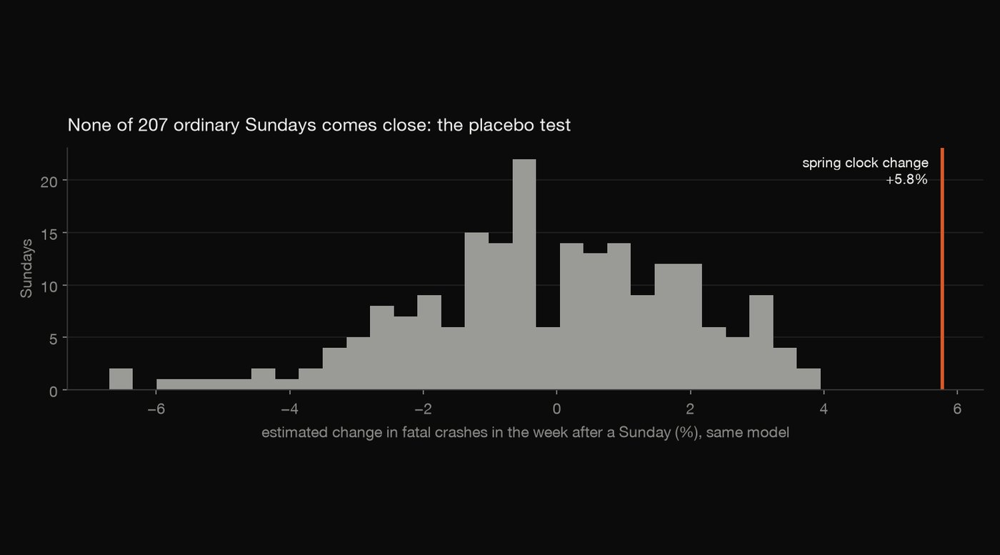
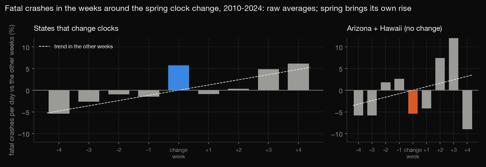
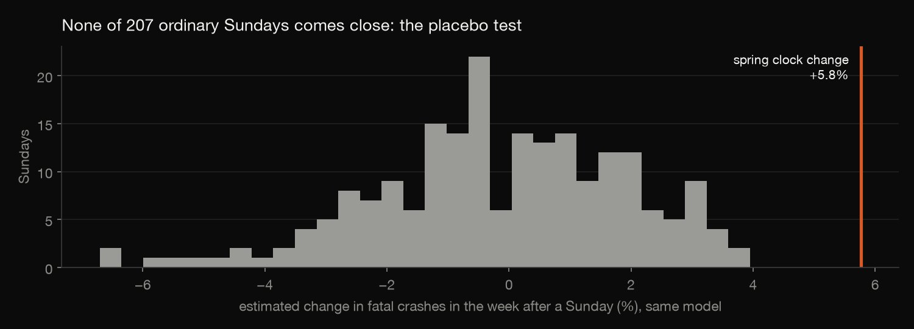
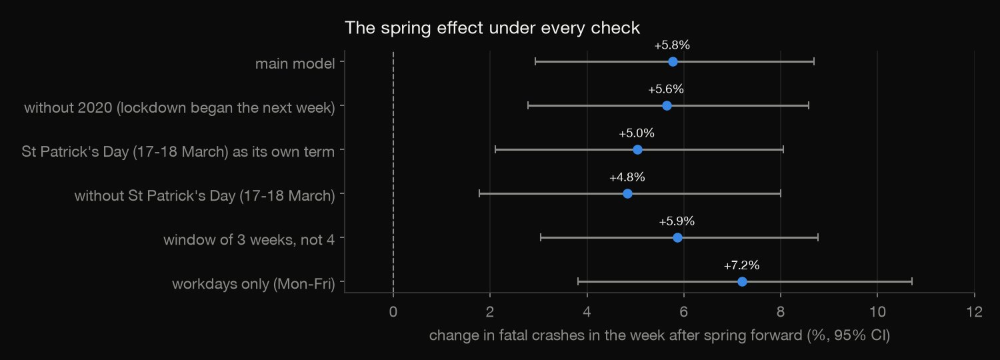
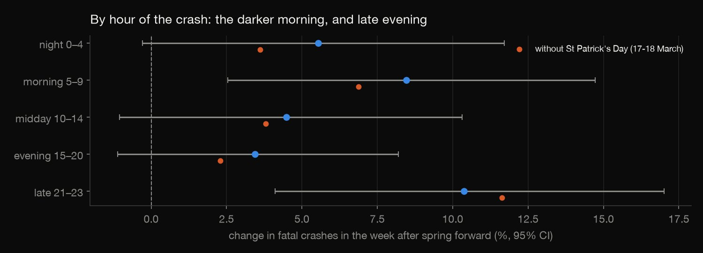

Statistics · Causal inference · 2026-10
Clock Change and Fatal Crashes
Does the spring clock change raise fatal crashes? Fifteen years of every fatal crash in the US, Arizona and Hawaii as a no-change comparison, a placebo test on 207 ordinary Sundays, and every model refitted in R.

Counts, not rates: miles driven by week aren't available. Arizona and Hawaii are small (2.3 fatal crashes a day), so that comparison is noisy.
01 — The problem
Each March most of the US moves its clocks forward an hour. Everyone loses sleep, and mornings are dark again for weeks. States keep debating whether to stop changing clocks, and road safety comes up every time.
Does the week after the spring change really have more fatal crashes than it should, and how sure can we be that it isn't just the season, a holiday, or chance?
02 — What I built
A statistical test on NHTSA's census of fatal crashes (FARS, 2010–2024, about 510,000 crashes):
- Daily counts by date, for states that change clocks and for Arizona plus Hawaii, which don't, split by time of day.
- An event-window model: quasi-Poisson regression of daily crashes around each clock change, with year, day-of-week and trend terms.
- A placebo test: the same model around 207 ordinary Sundays.
- Robustness checks: St. Patrick's Day, the 2020 lockdown, window length, workdays.
- Every model refitted in R to confirm the numbers.
03 — How it was built
- 01
Count every fatal crash by day
FARS records every crash on a public road in which someone died within 30 days. Fifteen years of files become one table of daily counts, split by group and by time of day. Every crash has a known day; a few hundred a year have an unknown hour.
Arizona and Hawaii never change their clocks, so they show what late March looks like with no change.
NO_DST = {4: "AZ", 15: "HI"} # FIPS state codes - 02
Model the weeks around each change
For each year the model takes the four weeks either side of the change. It estimates how much higher daily crashes are in the 7 days starting on the change Sunday, holding the year and the day of the week fixed. A trend term matters here: crashes rise anyway as spring arrives. The counts are overdispersed (dispersion 1.5), so the errors are quasi-Poisson.

FORMULA = "{y} ~ week_after + C(year) + C(dow) + t" - 03
Test it against ordinary Sundays
A significant coefficient can still be a fluke of the method. So the identical model runs around every Sunday at least five weeks from either clock change, giving 207 estimates from weeks with no change at all. They centre on −0.2%, and the largest is +4.0%. The spring change, at +5.8%, is beyond all of them.

sundays = sundays[(sundays["days_from_spring"].abs() > 35) & (sundays["days_from_fall"].abs() > 35) - 04
Look for what else is in that week
St. Patrick's Day falls inside the week after the change in 9 of the 15 years, and it is a known drink-driving night. Handled as its own term, or left out, it accounts for about a fifth of the estimate: +4.8% remains (95% CI +1.8% to +8.0%). The effect also holds without 2020, when lockdown began the following week (+5.6%); with a 3-week window (+5.9%); and on workdays only (+7.2%).

w0["st_patricks"] = ((w0["date"].dt.month == 3) & (w0["date"].dt.day.isin([17, 18]))).astype(int) # the night of the 17th runs past midnight - 05
Refit everything in R
check.Rrefits all 14 models with R's ownglmfrom the same daily table. Every coefficient and standard error matches statsmodels to 1e-6, and the spring estimate is confirmed above every placebo.m <- glm(f, family = quasipoisson, data = w)
04 — Results
| Week after the change | Crashes | p |
|---|---|---|
| Spring, changing states | +5.8% | 0.0001 |
| Fall back | +0.3% | 0.80 |
| Spring, AZ + HI | −5.4% | 0.39 |
- Spring forward: 5.8% more fatal crashes in the week after (95% CI +2.9% to +8.7%), and 5.6% more deaths.
- Fall back: no detectable change.
- No clock change, no rise: Arizona and Hawaii show none.
- When in the day: the largest rises are in the dark morning hours, 5–9 am (+8.5%), and late evening, 9–11 pm (+10.4%). Both stay after St. Patrick's Day is removed (+6.9% and +11.6%).

05 — What I'd do next
- Turn counts into rates with weekly traffic volumes.
- Use county-level timing to compare the eastern and western edges of each time zone, where the clock change moves sunrise differently.
- Look past the first week, at the darker mornings through early April.